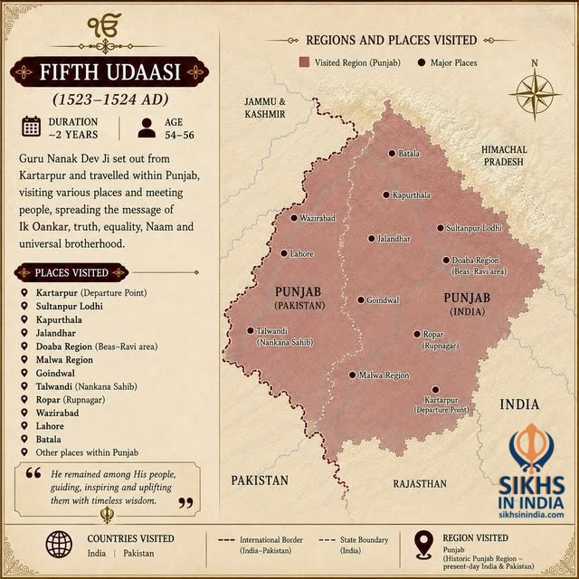

ਗੁਰੂ ਨਾਨਕ ਦੇਵ ਜੀ ਦੀਆਂ ਉਦਾਸੀਆਂ
ਉਦਾਸੀਆਂ ਕੀ ਸਨ?
ਸਿੱਖ ਧਰਮ ਦੇ ਬਾਨੀ ਗੁਰੂ ਨਾਨਕ ਦੇਵ ਜੀ ਇਤਿਹਾਸ ਦੇ ਮਹਾਨ ਯਾਤਰੀਆਂ ਵਿੱਚੋਂ ਵੀ ਇੱਕ ਸਨ। ਲਗਭਗ 24 ਸਾਲ ਉਨ੍ਹਾਂ ਨੇ ਪੈਦਲ ਅਤੇ ਸਮੁੰਦਰੀ ਰਸਤੇ ਯਾਤਰਾਵਾਂ ਕੀਤੀਆਂ — ਪੰਜਾਬ ਤੋਂ ਅਸਾਮ ਅਤੇ ਓਡੀਸ਼ਾ ਤੱਕ, ਦੱਖਣ ਵਿੱਚ ਸ੍ਰੀਲੰਕਾ ਤੱਕ, ਉੱਤਰ ਵਿੱਚ ਹਿਮਾਲਿਆ ਤੱਕ ਅਤੇ ਪੱਛਮ ਵਿੱਚ ਮੱਕੇ ਅਤੇ ਬਗ਼ਦਾਦ ਤੱਕ — ਤਾਂ ਜੋ ਲੋਕਾਂ ਨੂੰ ਸ੍ਰਿਸ਼ਟੀ ਦੀ ਏਕਤਾ ਦਾ ਬੋਧ ਕਰਾ ਸਕਣ। ਇਨ੍ਹਾਂ ਯਾਤਰਾਵਾਂ ਵਿੱਚ ਉਨ੍ਹਾਂ ਦੇ ਸਾਥੀ ਭਾਈ ਮਰਦਾਨਾ ਸਨ, ਜੋ ਗੁਰੂ ਜੀ ਦੇ ਬਾਣੀ ਗਾਉਣ ਸਮੇਂ ਰਬਾਬ ਵਜਾਉਂਦੇ ਸਨ।
ਇਨ੍ਹਾਂ ਰੂਹਾਨੀ ਯਾਤਰਾਵਾਂ ਨੂੰ ਉਦਾਸੀਆਂ ਕਿਹਾ ਜਾਂਦਾ ਹੈ। ਇਹ ਸ਼ਬਦ ਉਦਾਸ ਤੋਂ ਬਣਿਆ ਹੈ, ਜਿਸ ਦਾ ਅਰਥ ਹੈ ਵੈਰਾਗ: ਇਨ੍ਹਾਂ ਯਾਤਰਾਵਾਂ ਦਾ ਮਕਸਦ ਸਰਹੱਦਾਂ ਪਾਰ ਕਰਨਾ ਨਹੀਂ, ਸਗੋਂ ਲੋਕਾਂ ਦੇ ਦਿਲਾਂ ਤੱਕ ਪਹੁੰਚਣਾ ਸੀ।


ਆਮ ਤੌਰ ’ਤੇ ਚਾਰ ਮੁੱਖ ਉਦਾਸੀਆਂ ਮੰਨੀਆਂ ਜਾਂਦੀਆਂ ਹਨ — ਪੂਰਬ, ਦੱਖਣ, ਉੱਤਰ ਅਤੇ ਪੱਛਮ ਵੱਲ। ਪੁਰਾਤਨ ਜਨਮਸਾਖੀ ਵਰਗੀਆਂ ਕੁਝ ਜਨਮਸਾਖੀ ਪਰੰਪਰਾਵਾਂ ਪੰਜਾਬ ਦੇ ਅੰਦਰ ਇੱਕ ਪੰਜਵੀਂ, ਛੋਟੀ ਯਾਤਰਾ ਦਾ ਵੀ ਜ਼ਿਕਰ ਕਰਦੀਆਂ ਹਨ। ਇਹ ਪੰਨਾ ਪੰਜ ਯਾਤਰਾਵਾਂ ਦੇ ਵੇਰਵੇ ਦੀ ਪਾਲਣਾ ਕਰਦਾ ਹੈ। ਤਾਰੀਖ਼ਾਂ ਅੰਦਾਜ਼ਨ ਹਨ ਅਤੇ ਵੱਖ-ਵੱਖ ਸਰੋਤਾਂ ਵਿੱਚ ਵੱਖਰੀਆਂ ਹਨ।
ਪਹਿਲੀ ਉਦਾਸੀ: ਪੂਰਬੀ, ਉੱਤਰੀ ਅਤੇ ਉੱਤਰ-ਪੂਰਬੀ ਭਾਰਤ (ਲਗਭਗ 1500–1506)

ਸੁਲਤਾਨਪੁਰ ਲੋਧੀ ਤੋਂ ਚੱਲ ਕੇ ਗੁਰੂ ਨਾਨਕ ਦੇਵ ਜੀ ਅੱਜ ਦੇ ਪਾਕਿਸਤਾਨ ਵਿੱਚ ਤੁਲੰਬਾ, ਸੈਦਪੁਰ (ਏਮਨਾਬਾਦ), ਪਸਰੂਰ ਅਤੇ ਸਿਆਲਕੋਟ ਗਏ, ਅਤੇ ਫਿਰ ਪੂਰਬ ਵੱਲ ਪਾਣੀਪਤ, ਦਿੱਲੀ ਅਤੇ ਬਨਾਰਸ ਰਾਹੀਂ ਨਾਨਕਮਤਾ, ਟਾਂਡਾ ਵਣਜਾਰਾ, ਅਸਾਮ ਦੇ ਕਾਮਰੂਪ ਅਤੇ ਆਸਾ ਦੇਸ, ਅਤੇ ਓਡੀਸ਼ਾ ਵਿੱਚ ਜਗਨਨਾਥ ਪੁਰੀ ਪਹੁੰਚੇ। ਇਹ ਸਭ ਤੋਂ ਲੰਮੀ ਯਾਤਰਾ ਸੀ।
ਇਸ ਦੀਆਂ ਸਭ ਤੋਂ ਪ੍ਰਸਿੱਧ ਘਟਨਾਵਾਂ ਵਿੱਚੋਂ ਗੁਰੂ ਜੀ ਦੀ ਹਰਿਦੁਆਰ ਫੇਰੀ ਹੈ। ਲੋਕਾਂ ਨੂੰ ਆਪਣੇ ਪਿੱਤਰਾਂ ਲਈ ਚੜ੍ਹਦੇ ਸੂਰਜ ਵੱਲ ਪਾਣੀ ਸੁੱਟਦੇ ਵੇਖ ਕੇ ਉਨ੍ਹਾਂ ਨੇ ਪੱਛਮ ਵੱਲ, ਪੰਜਾਬ ਵਿੱਚ ਆਪਣੇ ਖੇਤਾਂ ਵੱਲ ਪਾਣੀ ਸੁੱਟਣਾ ਸ਼ੁਰੂ ਕੀਤਾ: ਜੇ ਉਨ੍ਹਾਂ ਦਾ ਪਾਣੀ ਪਰਲੋਕ ਤੱਕ ਪਹੁੰਚ ਸਕਦਾ ਹੈ, ਤਾਂ ਉਨ੍ਹਾਂ ਦਾ ਪਾਣੀ ਕਿਤੇ ਘੱਟ ਦੂਰ ਖੇਤਾਂ ਤੱਕ ਕਿਉਂ ਨਹੀਂ? ਇਹ ਸਿੱਖਿਆ ਸੀ ਕਿ ਸਮਝ ਤੋਂ ਬਿਨਾਂ ਕਰਮਕਾਂਡ ਵਿਅਰਥ ਹੈ। ਕਾਮਰੂਪ ਵਿੱਚ ਉਹ ਤੰਤਰ ਅਤੇ ਸ਼ਾਕਤ ਪਰੰਪਰਾਵਾਂ ਦੇ ਪੈਰੋਕਾਰਾਂ ਨੂੰ ਮਿਲੇ ਅਤੇ ਸਿਖਾਇਆ ਕਿ ਪਰਮਾਤਮਾ ਤੱਕ ਪਿਆਰ ਅਤੇ ਭਗਤੀ ਨਾਲ ਪਹੁੰਚਿਆ ਜਾਂਦਾ ਹੈ, ਡਰ ਦੇ ਕਰਮਕਾਂਡਾਂ ਨਾਲ ਨਹੀਂ।
ਦੂਜੀ ਉਦਾਸੀ: ਦੱਖਣੀ ਭਾਰਤ ਅਤੇ ਸ੍ਰੀਲੰਕਾ (ਲਗਭਗ 1506–1513)

ਦੂਜੀ ਯਾਤਰਾ ਵਿੱਚ ਗੁਰੂ ਜੀ ਹਰਿਦੁਆਰ (ਮਨਸਾ ਦੇਵੀ) ਰਾਹੀਂ ਭਾਰਤ ਦੇ ਦੱਖਣ ਵਿੱਚ ਤਾਮਿਲਨਾਡੂ ਦੇ ਰਾਮੇਸ਼ਵਰਮ ਅਤੇ ਕੰਨਿਆਕੁਮਾਰੀ ਤੱਕ ਗਏ, ਅਤੇ ਸਮੁੰਦਰ ਪਾਰ ਸ੍ਰੀਲੰਕਾ ਪਹੁੰਚੇ, ਜਿਸ ਨੂੰ ਜਨਮਸਾਖੀਆਂ ਵਿੱਚ ਸੰਗਲਦੀਪ ਕਿਹਾ ਗਿਆ ਹੈ। ਹਰ ਥਾਂ ਉਹ ਹਰ ਧਰਮ ਅਤੇ ਵਰਗ ਦੇ ਲੋਕਾਂ ਨੂੰ ਮਿਲੇ ਅਤੇ ਇੱਕ ਓਅੰਕਾਰ, ਸੱਚ ਅਤੇ ਬਰਾਬਰੀ ਦਾ ਉਹੀ ਸੁਨੇਹਾ ਦਿੱਤਾ।
ਤੀਜੀ ਉਦਾਸੀ: ਹਿਮਾਲਿਆ ਅਤੇ ਉਸ ਤੋਂ ਅੱਗੇ (ਲਗਭਗ 1514–1518)
ਤੀਜੀ ਉਦਾਸੀ ਵਿੱਚ ਗੁਰੂ ਨਾਨਕ ਦੇਵ ਜੀ ਉੱਤਰ ਵਿੱਚ ਹਿਮਾਲਿਆ ਵੱਲ ਗਏ — ਕਸ਼ਮੀਰ, ਨੇਪਾਲ, ਸਿੱਕਮ ਅਤੇ ਤਿੱਬਤ ਰਾਹੀਂ ਅੱਜ ਦੇ ਉਜ਼ਬੇਕਿਸਤਾਨ ਵਿੱਚ ਤਾਸ਼ਕੰਦ ਤੱਕ। ਉਨ੍ਹਾਂ ਨੇ ਨਾਥ ਜੋਗੀਆਂ (ਸਿੱਧਾਂ) ਅਤੇ ਬੋਧੀ ਭਿਕਸ਼ੂਆਂ ਨਾਲ ਸੰਵਾਦ ਕੀਤਾ ਅਤੇ ਪਰਮਾਤਮਾ ਤੱਕ ਪਹੁੰਚਣ ਦੇ ਰਾਹ ਵਜੋਂ ਤਪੱਸਿਆ ਅਤੇ ਸਮਾਜ ਤੋਂ ਦੂਰੀ ’ਤੇ ਸਵਾਲ ਉਠਾਏ।
ਜਨਮਸਾਖੀਆਂ ਸਿੱਧਾਂ ਨਾਲ ਉਨ੍ਹਾਂ ਦੀ ਗੋਸ਼ਟੀ ਨੂੰ ਇਸੇ ਯਾਤਰਾ ਵਿੱਚ ਸੁਮੇਰ ਪਰਬਤ ’ਤੇ ਦੱਸਦੀਆਂ ਹਨ। ਗੁਰੂ ਜੀ ਦੀ ਇਹ ਸਿੱਖਿਆ — ਕਿ ਸੱਚਾ ਤਿਆਗ ਹਉਮੈ ਦਾ ਹੈ, ਪਰਿਵਾਰ ਅਤੇ ਸਮਾਜਿਕ ਜ਼ਿੰਮੇਵਾਰੀਆਂ ਦਾ ਨਹੀਂ — ਸ੍ਰੀ ਗੁਰੂ ਗ੍ਰੰਥ ਸਾਹਿਬ ਜੀ ਦੀ ਬਾਣੀ ਸਿਧ ਗੋਸਟਿ ਵਿੱਚ ਦਰਜ ਹੈ।
ਚੌਥੀ ਉਦਾਸੀ: ਅਰਬ, ਮੱਕਾ ਅਤੇ ਬਗ਼ਦਾਦ (ਲਗਭਗ 1519–1521)
ਚੌਥੀ ਉਦਾਸੀ ਸਭ ਤੋਂ ਦੂਰ ਤੱਕ ਗਈ। ਗੁਰੂ ਜੀ ਪੱਛਮ ਵੱਲ ਮੁਲਤਾਨ, ਲਾਹੌਰ, ਸਿੰਧ ਅਤੇ ਬਲੋਚਿਸਤਾਨ ਰਾਹੀਂ ਹੋਰਮੁਜ਼, ਫਿਰ ਮੱਕੇ ਅਤੇ ਮਦੀਨੇ, ਅਤੇ ਉਸ ਤੋਂ ਬਾਅਦ ਬਸਰੇ ਅਤੇ ਬਗ਼ਦਾਦ ਗਏ। ਜਨਮਸਾਖੀਆਂ ਦੱਸਦੀਆਂ ਹਨ ਕਿ ਉਨ੍ਹਾਂ ਨੇ ਹਿੰਦੂ ਅਤੇ ਮੁਸਲਿਮ ਪਹਿਰਾਵੇ ਨੂੰ ਮਿਲਾ ਕੇ ਬਣਿਆ ਬਸਤਰ ਪਹਿਨਿਆ ਸੀ, ਅਤੇ ਉਨ੍ਹਾਂ ਦੇ ਨਾਲ ਮੁਸਲਿਮ ਰਬਾਬੀ ਭਾਈ ਮਰਦਾਨਾ ਸਨ।
ਜਨਮਸਾਖੀਆਂ ਅਨੁਸਾਰ ਮੱਕੇ ਵਿੱਚ ਗੁਰੂ ਜੀ ਕਾਬੇ ਵੱਲ ਪੈਰ ਕਰਕੇ ਆਰਾਮ ਕਰ ਰਹੇ ਸਨ। ਟੋਕੇ ਜਾਣ ’ਤੇ ਉਨ੍ਹਾਂ ਨੇ ਕਿਹਾ ਕਿ ਉਨ੍ਹਾਂ ਦੇ ਪੈਰ ਉਸ ਦਿਸ਼ਾ ਵੱਲ ਕਰ ਦਿਓ ਜਿੱਥੇ ਪਰਮਾਤਮਾ ਨਾ ਹੋਵੇ — ਅਤੇ ਕਿਹਾ ਜਾਂਦਾ ਹੈ ਕਿ ਜਿਧਰ ਉਨ੍ਹਾਂ ਦੇ ਪੈਰ ਘੁਮਾਏ ਗਏ, ਕਾਬਾ ਉਧਰ ਹੀ ਦਿਖਾਈ ਦਿੱਤਾ। ਸਿੱਖਿਆ ਇਹ ਹੈ ਕਿ ਪਰਮਾਤਮਾ ਹਰ ਥਾਂ ਹੈ, ਕਿਸੇ ਇੱਕ ਦਿਸ਼ਾ ਤੱਕ ਸੀਮਤ ਨਹੀਂ। ਬਗ਼ਦਾਦ ਵਿੱਚ ਉਨ੍ਹਾਂ ਦੀ ਫੇਰੀ ਦੀ ਯਾਦ ਵਿੱਚ ਇੱਕ ਯਾਦਗਾਰ ਸਦੀਆਂ ਤੱਕ ਰਹੀ ਦੱਸੀ ਜਾਂਦੀ ਹੈ।
ਪੰਜਵੀਂ ਉਦਾਸੀ: ਪੰਜਾਬ ਦੇ ਅੰਦਰ (ਲਗਭਗ 1523–1524)

ਪੰਜਵੀਂ ਯਾਤਰਾ ਛੋਟੀ ਸੀ ਅਤੇ ਪੰਜਾਬ ਦੇ ਅੰਦਰ ਹੀ ਰਹੀ। ਕਰਤਾਰਪੁਰ ਤੋਂ ਗੁਰੂ ਜੀ ਸੁਲਤਾਨਪੁਰ ਲੋਧੀ, ਕਪੂਰਥਲਾ, ਜਲੰਧਰ, ਦੋਆਬਾ ਅਤੇ ਮਾਲਵਾ ਖੇਤਰ, ਗੋਇੰਦਵਾਲ, ਤਲਵੰਡੀ (ਨਨਕਾਣਾ ਸਾਹਿਬ), ਰੋਪੜ, ਵਜ਼ੀਰਾਬਾਦ, ਲਾਹੌਰ ਅਤੇ ਬਟਾਲਾ ਗਏ, ਲੋਕਾਂ ਨੂੰ ਮਿਲੇ ਅਤੇ ਇੱਕ ਓਅੰਕਾਰ, ਸੱਚ, ਬਰਾਬਰੀ ਅਤੇ ਨਾਮ ਦਾ ਉਹੀ ਸੁਨੇਹਾ ਫੈਲਾਇਆ।
ਉਦਾਸੀਆਂ ਤੋਂ ਬਾਅਦ: ਕਰਤਾਰਪੁਰ (1525–1539)
ਆਪਣੀਆਂ ਯਾਤਰਾਵਾਂ ਤੋਂ ਬਾਅਦ ਗੁਰੂ ਨਾਨਕ ਦੇਵ ਜੀ ਰਾਵੀ ਦੇ ਕੰਢੇ ਕਰਤਾਰਪੁਰ ਵਿੱਚ ਵੱਸ ਗਏ ਅਤੇ 1539 ਤੱਕ ਉੱਥੇ ਹੀ ਰਹੇ। ਉਨ੍ਹਾਂ ਨੇ ਖੇਤੀ ਕੀਤੀ ਅਤੇ ਸੰਗਤ ਅਤੇ ਲੰਗਰ ਦੀ ਪਰੰਪਰਾ ’ਤੇ ਆਧਾਰਿਤ ਇੱਕ ਭਾਈਚਾਰਾ ਬਣਾਇਆ, ਅਤੇ ਨਾਮ ਜਪਣਾ, ਕਿਰਤ ਕਰਨੀ ਅਤੇ ਵੰਡ ਛਕਣਾ ਦਾ ਰਾਹ ਸਿਖਾਇਆ, ਜੋ ਸਿੱਖ ਜੀਵਨ ਦੀ ਨੀਂਹ ਬਣਿਆ। ਕਰਤਾਰਪੁਰ ਸਾਹਿਬ ਹੁਣ ਪਾਕਿਸਤਾਨ ਵਿੱਚ ਹੈ ਅਤੇ ਭਾਰਤ ਤੋਂ ਕਰਤਾਰਪੁਰ ਲਾਂਘੇ ਰਾਹੀਂ ਉੱਥੇ ਜਾਇਆ ਜਾ ਸਕਦਾ ਹੈ।
ਅਕਸਰ ਪੁੱਛੇ ਜਾਣ ਵਾਲੇ ਸਵਾਲ
ਗੁਰੂ ਨਾਨਕ ਦੇਵ ਜੀ ਦੀਆਂ ਉਦਾਸੀਆਂ ਕੀ ਹਨ?
ਉਦਾਸੀਆਂ ਉਹ ਰੂਹਾਨੀ ਯਾਤਰਾਵਾਂ ਹਨ ਜੋ ਗੁਰੂ ਨਾਨਕ ਦੇਵ ਜੀ ਨੇ ਲਗਭਗ 1500 ਤੋਂ 1524 ਵਿਚਕਾਰ ਦੱਖਣੀ ਏਸ਼ੀਆ, ਹਿਮਾਲਿਆ ਅਤੇ ਮੱਧ-ਪੂਰਬ ਵਿੱਚ ਕੀਤੀਆਂ, ਤਾਂ ਜੋ ਹਰ ਧਰਮ ਦੇ ਵਿਦਵਾਨਾਂ, ਸੰਤਾਂ ਅਤੇ ਆਮ ਲੋਕਾਂ ਤੱਕ ਇੱਕ ਓਅੰਕਾਰ — ਪਰਮਾਤਮਾ ਦੀ ਏਕਤਾ — ਦਾ ਸੁਨੇਹਾ ਪਹੁੰਚਾ ਸਕਣ।
ਗੁਰੂ ਨਾਨਕ ਦੇਵ ਜੀ ਨੇ ਕਿੰਨੀਆਂ ਉਦਾਸੀਆਂ ਕੀਤੀਆਂ?
ਆਮ ਤੌਰ ’ਤੇ ਚਾਰ ਮੁੱਖ ਉਦਾਸੀਆਂ ਮੰਨੀਆਂ ਜਾਂਦੀਆਂ ਹਨ: ਪੂਰਬ, ਦੱਖਣ, ਉੱਤਰ ਅਤੇ ਪੱਛਮ ਵੱਲ। ਕੁਝ ਜਨਮਸਾਖੀ ਪਰੰਪਰਾਵਾਂ ਪੰਜਾਬ ਦੇ ਅੰਦਰ ਇੱਕ ਪੰਜਵੀਂ, ਛੋਟੀ ਯਾਤਰਾ ਦਾ ਵੀ ਜ਼ਿਕਰ ਕਰਦੀਆਂ ਹਨ, ਇਸੇ ਲਈ ਉਦਾਸੀਆਂ ਨੂੰ ਅਕਸਰ ਪੰਜ ਦੱਸਿਆ ਜਾਂਦਾ ਹੈ।
ਕੀ ਗੁਰੂ ਨਾਨਕ ਦੇਵ ਜੀ ਮੱਕੇ ਗਏ ਸਨ?
ਹਾਂ। ਜਨਮਸਾਖੀਆਂ ਦੱਸਦੀਆਂ ਹਨ ਕਿ ਪੱਛਮ ਦੀ ਉਦਾਸੀ ਵਿੱਚ ਉਹ ਮੱਕੇ ਅਤੇ ਮਦੀਨੇ ਗਏ, ਅਤੇ ਉਨ੍ਹਾਂ ਦੇ ਪੈਰਾਂ ਅਤੇ ਕਾਬੇ ਦੀ ਪ੍ਰਸਿੱਧ ਘਟਨਾ ਦਾ ਵਰਣਨ ਕਰਦੀਆਂ ਹਨ, ਜੋ ਸਿਖਾਉਂਦੀ ਹੈ ਕਿ ਪਰਮਾਤਮਾ ਹਰ ਦਿਸ਼ਾ ਵਿੱਚ ਹੈ।
ਉਦਾਸੀਆਂ ਵਿੱਚ ਕਿੰਨਾ ਸਮਾਂ ਲੱਗਿਆ?
ਕੁੱਲ ਮਿਲਾ ਕੇ ਇਹ ਯਾਤਰਾਵਾਂ ਲਗਭਗ 24 ਸਾਲਾਂ ਵਿੱਚ, ਲਗਭਗ 1500 ਤੋਂ 1524 ਤੱਕ ਫੈਲੀਆਂ ਰਹੀਆਂ, ਜਿਸ ਤੋਂ ਬਾਅਦ ਗੁਰੂ ਨਾਨਕ ਦੇਵ ਜੀ ਕਰਤਾਰਪੁਰ ਵਿੱਚ ਵੱਸ ਗਏ।
ਉਦਾਸੀਆਂ ਦਾ ਮਕਸਦ ਕੀ ਸੀ?
ਇਹ ਆਮ ਅਰਥਾਂ ਵਿੱਚ ਤੀਰਥ ਯਾਤਰਾਵਾਂ ਨਹੀਂ ਸਨ। ਗੁਰੂ ਨਾਨਕ ਦੇਵ ਜੀ ਨੇ ਇਨ੍ਹਾਂ ਰਾਹੀਂ ਪੁਜਾਰੀਆਂ, ਵਿਦਵਾਨਾਂ, ਜੋਗੀਆਂ ਅਤੇ ਹਾਕਮਾਂ ਨਾਲ ਸੰਵਾਦ ਕੀਤਾ, ਖੋਖਲੇ ਕਰਮਕਾਂਡ, ਜਾਤ-ਪਾਤ ਅਤੇ ਵਹਿਮਾਂ-ਭਰਮਾਂ ਨੂੰ ਚੁਣੌਤੀ ਦਿੱਤੀ, ਅਤੇ ਨਾਮ ਜਪਣਾ, ਕਿਰਤ ਕਰਨੀ ਅਤੇ ਵੰਡ ਛਕਣਾ ਦਾ ਰਾਹ ਦੱਸਿਆ।
ਉਦਾਸੀਆਂ ਤੋਂ ਬਾਅਦ ਗੁਰੂ ਨਾਨਕ ਦੇਵ ਜੀ ਕਿੱਥੇ ਵੱਸੇ?
ਰਾਵੀ ਦੇ ਕੰਢੇ ਕਰਤਾਰਪੁਰ ਵਿੱਚ, ਜੋ ਅੱਜ ਪਾਕਿਸਤਾਨ ਵਿੱਚ ਹੈ, ਜਿੱਥੇ ਉਹ 1539 ਤੱਕ ਰਹੇ। ਭਾਰਤ ਤੋਂ ਕਰਤਾਰਪੁਰ ਲਾਂਘੇ ਰਾਹੀਂ ਉੱਥੇ ਜਾਇਆ ਜਾ ਸਕਦਾ ਹੈ।